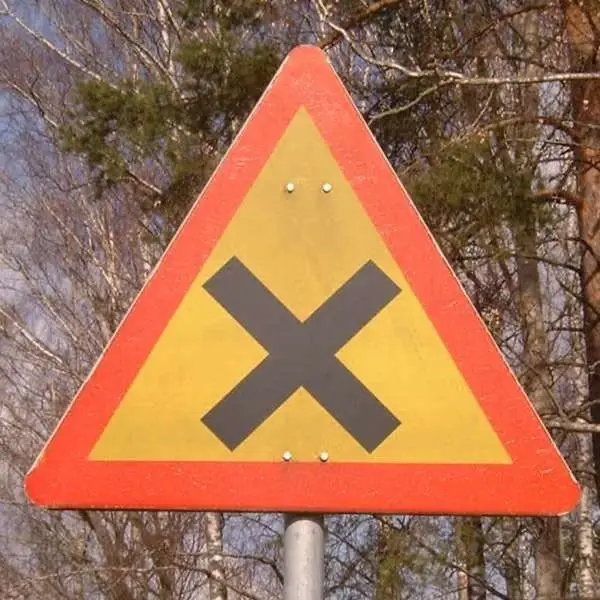

Włącz myślenie, nim opadną szlabany
Zasady na przejeździe kolejowym i nowe kary: nawet 3 miesiące bez prawa jazdy.
Kompendium wiedzy OSK Tailor Gdańsk. Szkolenia opieramy na aktualnych standardach nauki jazdy wg PORD Gdańsk 2026, więc z kursu wychodzisz nie tylko przygotowany do egzaminu, ale też umiesz łączyć teorię z praktyką.
7 wpisów, od najnowszego
Zasady na przejeździe kolejowym i nowe kary: nawet 3 miesiące bez prawa jazdy.
Znak D-3 czy C-5? Pomylenie drogi jednokierunkowej z nakazem jazdy prosto może zakończyć egzamin w PORD. Wyjaśniamy różnice i odpowiadamy na pytania.

Zobacz jakie odległości obowiązują w Kodeksie Drogowym. Parkowanie, tunele, trójkąt, prędkość. Porady OSK Tailor Gdańsk
Zakaz postoju i zakaz zatrzymywania się – poznaj znaki drogowe przed egzaminem w PORD Gdańsk. Poradnik dla kursantów OSK Tailor Gdańsk.

Jak prawidłowo zachować się na skrzyżowaniu? Poradnik dla osób uczących się na prawo jazdy kat. B w Gdańsku w OSK Tailor Nauka Jazdy Gdańsk

Przeczytaj, jakie pojazdy i jakie uprawnienia daje prawo jazdy kat. B - pojazdy, przyczepy, i warunki formalne. - poradnik OSK Tailor Gdańsk.
Czym różni się ostrożność od szczególnej ostrożności? Definicja z Prawa o ruchu drogowym i sytuacje, w których kodeks wymaga szczególnej ostrożności.
Każdy kandydat na kierowcę na kursie kat. B w OSK Tailor powinien znać akty prawne, od których zależy bezpieczeństwo na drodze. Szkolenie opieramy na trzech ustawach.
Kodeks drogowy: szczegółowe zasady poruszania się w strefach zamieszkania, strefach ruchu i na drogach publicznych.
Jak zdobywa się uprawnienia, jakie badania lekarskie są potrzebne oraz jakie masz prawa i obowiązki jako przyszły kierowca.
Kategorie dróg i to, kto odpowiada za ich stan oraz utrzymanie infrastruktury.
Kurs prawa jazdy w Gdańsku to dla nas nie tylko technika jazdy, ale też realny wkład w cele bezpieczeństwa Unii Europejskiej. Jako szkoła aktywnie wspieramy dwa założenia.
Uczymy, że poruszanie się po drogach z szacunkiem dla innych to prawo i obowiązek każdego kierującego.
Szukasz szkoły jazdy w Gdańsku, która uczy rozumieć przepisy, a nie tylko je wykuć? Na kursie nauczymy Cię: